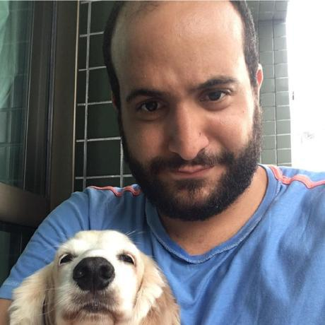

Model Checking in Clojure
Paulo Feodrippe

The Talk
I will walk you through Recife (a library that I'm still developing), it leverages what you already know about Clojure (the REPL, the language, functional) to help you think and test your system design in a more abstract level.
You don't need to have knowledge about model checking or formal methods, let's learn together o/.
Bio
Buba (Paulo's nickname) is from Recife, Brazil and currently lives in São Paulo. He is a software engineer who is interested in distributed systems and recently started learning about formal methods and how they can be applied.